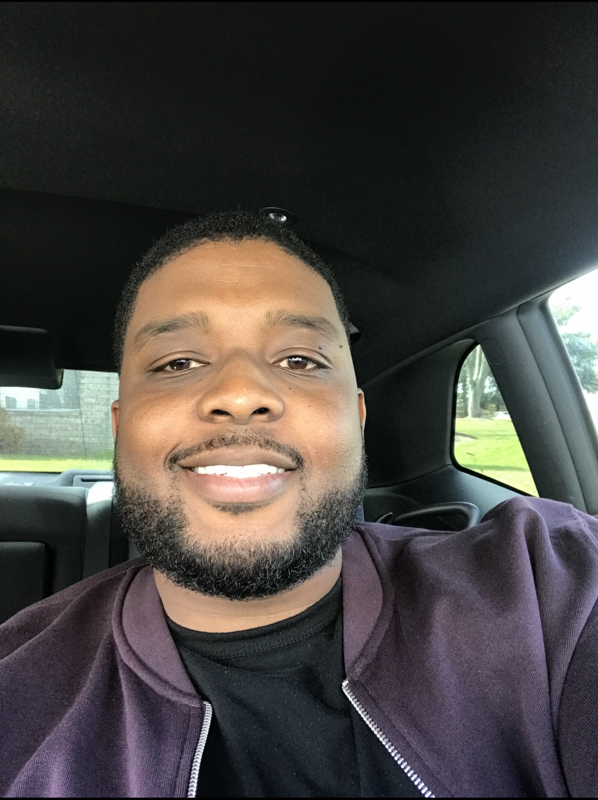

About Me
Hello! My name is Courtez M. Cannady but most people just call me Tez. I was born in Charleston,SC and I am a Marine Veteran. I hold a Bachelors of Science degree in Information Technology Management from Trident University International. Throughout my career journey I have worked with several information technology systems to include radio and satellite communications systems while active duty in the Marine Corps and designed some as a contractor. Currently I am a Senior Systems Engineer supporting government contracts. I have had the pleasure of supporting various DoD programs in systems design and acquisition. I am working towards being a product manager in the near future by picking up new skills. I currently hold certifications in AWS, Certified Cloud Practitioner and Certified Solutions Architect, and an ITIL v4 Foundation certification.
